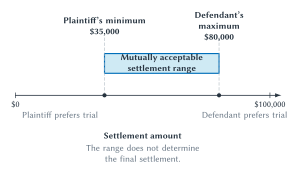

When a Contract Right Becomes a Dispute
The restaurant kitchen from Chapter 8 is finally complete, but it opened six weeks late. The restaurant owner claims that the contractor missed agreed deadlines, installed part of the ventilation system incorrectly, and caused $100,000 in lost profit and repair costs. The contractor responds that the owner repeatedly changed the design, provided late access to the building, and approved the disputed work.
Both sides can point to the contract. Both have emails, invoices, photographs, and witnesses. Neither has a complete record. Some instructions were given by telephone. A project manager left the contractor midway through construction. The owner announced an opening date before the permit schedule was certain. Each side believes the other is responsible.
Chapter 8 asked how enforceable promises make cooperation possible before breach. This chapter begins after cooperation has broken down. Saying that the owner has a contract right does not answer the practical questions:
- What claim can the owner prove?
- How much would a court award?
- What will it cost to obtain a decision?
- Can a judgment be collected?
- What information will appear before trial?
- Can the parties settle instead?
- Which institution should resolve the dispute?
A substantive right identifies what a person is legally entitled to demand or protect. A legal claim asks an institution to recognize and remedy an alleged violation of that right. A judgment is the formal decision produced by a court. Collection turns a monetary judgment into payment. Actual recovery is what the claimant ultimately receives after legal costs, delay, collection risk, and other obstacles.
Those stages should not be collapsed. A strong right can support a weak claim when evidence is missing. A winning claim can produce an uncollectible judgment. A collectible judgment can still cost more to obtain than it is worth.
This chapter studies the institutions between a right on paper and a recovery in practice. Courts matter, but trial is only one possible outcome. Parties investigate, make demands, exchange information, negotiate, mediate, arbitrate, settle, abandon claims, appeal, and sometimes use private dispute systems. Every step consumes resources and changes incentives.
The private parties and the legal system also ask different questions. The restaurant owner asks whether pursuing the claim will produce a positive expected payoff. The contractor asks whether resisting or settling will cost less. An institutional designer asks whether the process resolves disputes accurately enough, at reasonable cost, while preserving useful incentives for performance, precaution, and future cooperation.
The Social Cost of Resolving Disputes
Legal process is costly even when it works well. Parties spend time gathering documents, interviewing witnesses, consulting experts, negotiating, preparing arguments, and attending proceedings. Lawyers, judges, court staff, arbitrators, mediators, and enforcement officers use labor and physical resources. Delay can keep money, property, and business plans unsettled.
These are administrative costs: the resources used to prevent, process, decide, review, and enforce disputes. They include public costs borne by taxpayers as well as private costs borne by the parties.
Reducing administrative cost to zero would not produce a good legal system. A court that decides every case by flipping a coin would be inexpensive, but frequently wrong. A system with no opportunity to present evidence would be fast, but it could make rights almost meaningless.
An error cost is the social harm caused by an incorrect legal outcome. One error imposes liability when the defendant should not be liable. Another denies recovery when the defendant should be liable. The immediate mistake affects the parties, but its effects can extend forward. If courts routinely excuse late contractors who caused avoidable delays, future contractors may take less care. If courts routinely impose liability despite clear owner-caused changes, future contractors may charge more, refuse valuable projects, or waste resources documenting every conversation.
The economic objective is not maximum procedure or minimum procedure. It is to compare the expected reduction in error from an additional procedural safeguard with the added cost, delay, and strategic opportunity it creates.
Consider three possible procedures for the kitchen dispute:
- Decide immediately from the signed contract alone.
- Permit exchange of emails, invoices, photographs, and witness statements before decision.
- Require months of additional examination, multiple experts, and exhaustive review of every communication.
The second procedure may prevent important errors that the first would make. The third may uncover still more information, but the final increment of accuracy may cost more than it is worth. The point is marginal. Some additional process is valuable; more is not always better.
To identify error, economists sometimes use a perfect-information judgment as a benchmark. Imagine a decision-maker who knows the governing law, every relevant fact, and the true consequences of each action without spending anything to learn them. What outcome would that decision-maker reach?
The benchmark is a thought experiment, not a description of a real court. Actual judges and juries must work from incomplete evidence supplied through imperfect procedures. The substantive law itself may also be inefficient or unjust. The benchmark simply helps separate the outcome we would obtain with full information under the governing rule from errors caused by limited information and adjudication.
Efficiency is not the only value of legal process. Notice, participation, impartiality, public reasons, consistent treatment, dignity, and legitimacy matter even when their benefits cannot be reduced to lower error costs. Economic analysis contributes by forcing the tradeoffs into view. A procedure that sounds protective can still make valid claims prohibitively expensive. A cheap procedure can still be intolerably inaccurate or one-sided.
Is the Claim Worth Pursuing?
Return to the restaurant owner. Suppose the owner believes there is a 60 percent chance of obtaining a $100,000 judgment. If the judgment will be fully collected, the expected gross recovery is:
This does not mean the court will award $60,000. The simplified model assumes two possible trial outcomes: the owner obtains $100,000 or obtains nothing. The $60,000 is the probability-weighted average used for a decision made before the uncertainty is resolved.
If pursuing the claim through trial will cost the owner another $25,000, the expected net value is:
Under these stripped assumptions, pursuing the claim has positive expected private value. The calculation is not a prediction that the owner will sue. Risk, delay, disruption, emotion, reputation, nonmonetary relief, relationships, and settlement possibilities may matter. It is a disciplined starting point.
Collection belongs in the calculation. A judgment against a solvent insurer-backed company is not economically equivalent to the same judgment against an insolvent shell. Let:
represent the plaintiff’s estimated probability of obtaining the judgment represent the estimated probability of collecting the judgment if the plaintiff succeeds represent the judgment if the plaintiff succeeds represent the plaintiff’s remaining litigation cost
Then the simplified expected private value of the claim is:
In words: multiply the chance of winning by the conditional chance of collection and the judgment, then subtract the plaintiff’s cost. Each symbol represents an assumption that should be stated and questioned.
| Scenario | Success probability |
Judgment |
Collection after success |
Expected collectible recovery | Plaintiff cost |
Expected net value | Private filing implication |
|---|---|---|---|---|---|---|---|
| Restaurant dispute, base assumptions | 60% | $100,000 | 100% | $60,000 | $25,000 | +$35,000 | Worth pursuing in the stripped model |
| Small consumer claim | 80% | $500 | 100% | $400 | $2,000 | -$1,600 | Not worth pursuing individually |
| Restaurant dispute with collection risk | 60% | $100,000 | 25% | $15,000 | $25,000 | -$10,000 | Not worth pursuing in the stripped model |
Table 9.1. Expected private value of a legal claim. Litigation cost can make a small claim uneconomic even when success is likely, and collection risk can make a large nominal judgment worth little. The calculations omit settlement, appeal, delay, risk preferences, fee arrangements, reputational stakes, and nonmonetary remedies.
The small consumer claim exposes an enforcement gap. A customer may be highly likely to prove a $500 loss and still rationally decline to spend $2,000 pursuing it. The violation can be real even though an individual lawsuit is not privately worthwhile.
The collection-risk scenario exposes a different gap. A court may announce that the owner is entitled to $100,000, but a 25 percent collection probability reduces expected collectible recovery to $15,000. Subtracting $25,000 in legal cost produces an expected loss of $10,000.
Private filing value and social value are not the same. One successful claim may deter similar violations against many people. A claimant does not necessarily capture that benefit. Conversely, a privately profitable claim can consume public court resources, impose defense costs, or generate little useful deterrence. Contingency fees, class actions, insurance, public enforcement, fee shifting, and injunctions can change the relationship between private and social incentives.
The legal system therefore selects disputes before any judge decides them. Injury, legal merit, expected damages, evidence, wealth, access to lawyers, collection prospects, and procedural cost all affect which claims appear. Observing no lawsuit does not prove that no right was violated.
Settlement in the Shadow of Trial
Treat the restaurant owner as the potential plaintiff and the contractor as the potential defendant. Suppose both parties agree on the basic trial estimates. They believe the owner has a 60 percent chance of obtaining $100,000. The owner’s remaining trial cost is $25,000, and the contractor’s remaining defense cost is $20,000.
Trial is the fallback. The owner compares any proposed settlement with expected net trial recovery. The contractor compares the payment with expected liability plus the cost of defending through trial.
Begin with the owner. Expected gross recovery at trial is $60,000. After subtracting the owner’s $25,000 trial cost, the owner’s minimum acceptable settlement is $35,000:
Now consider the contractor. Expected liability is also $60,000. Going to trial would require another $20,000 in defense cost. The contractor should therefore be willing to pay as much as $80,000 to avoid trial:
Any settlement from $35,000 through $80,000 leaves both parties at least as well off as trial under the assumptions. The interval is the settlement range.

Figure 9.1. A settlement range in the shadow of trial. With a 60 percent expected chance of a $100,000 judgment, $25,000 in plaintiff trial cost, and $20,000 in defense cost, the plaintiff prefers any settlement of at least $35,000 and the defendant prefers any settlement no greater than $80,000. The interval represents possible gains from avoiding trial; it does not predict the final agreement or guarantee settlement.
The $45,000 width has a simple source:
which equals the parties’ combined avoided trial costs:
Trial would consume $45,000 in additional private legal resources. Settlement can preserve that amount as a cooperative surplus. The term means gains the parties can create by reaching agreement instead of using the costly fallback. It does not imply that the parties cooperate warmly or agree about who behaved badly.
The model identifies a range, not a point. It does not tell us whether the parties settle for $40,000, $60,000, or $75,000. Bargaining power, patience, cash constraints, reputation, information, risk preferences, and negotiation skill can affect how the surplus is divided.
Settlement can reduce private and public administrative costs, but it is not automatically socially ideal. A confidential settlement may conceal information useful to future customers. A settlement can leave a dangerous practice unchanged, affect outsiders, or prevent an appellate court from clarifying a rule. Unequal resources can also affect the bargain. A mutually accepted agreement is evidence of private advantage under the parties’ constraints, not proof that every public interest has been served.
Why Settlement Can Fail
If trial is costly and a settlement range exists, why would rational parties ever fail to settle?
The first answer is that the range depends on beliefs. Suppose the owner estimates an 80 percent chance of winning, while the contractor estimates only a 30 percent chance that the owner will win. The owner calculates a minimum settlement of:
The contractor calculates a maximum settlement of:
The owner’s $55,000 minimum exceeds the contractor’s $50,000 maximum. Under their current beliefs, no bargaining range exists.
The parties may disagree honestly. Each has seen different evidence. Each may interpret the contract differently. Each lawyer may assess witness credibility or legal uncertainty differently. New information can reopen a range, but no amount of repetition guarantees agreement.
Private information creates a second problem. The contractor may know that a project manager’s records strongly support the owner’s claim but may not reveal that fact voluntarily. The owner may know that the restaurant’s claimed lost profits are speculative. Each side has reason to present information selectively while trying to infer what the other side is hiding.
Strategic behavior creates a third problem. An early concession can reveal urgency or a weak fallback. A party may demand more than it would accept, threaten trial, delay, or invest in appearing committed. These tactics can improve one side’s expected share of the surplus. They can also destroy the surplus if both sides refuse to move.
Optimism, anger, and perceived fairness matter as well. A party may overweight favorable evidence, treat compromise as an admission of wrongdoing, or value public vindication. These preferences do not make the dispute analytically irrelevant. They change the payoff from settlement and trial.
Finally, the negotiator may not bear the client’s payoff. A lawyer paid by the hour can earn more from additional litigation. A contingency-fee lawyer bears much of the cost of additional effort but receives only an agreed share of any increase in recovery. An insurer may control defense and settlement while the insured cares about reputation. An organization may require approval from people who did not attend negotiations.
Settlement bargaining therefore repeats the Coasean lesson. A cooperative surplus can exist while transaction costs prevent the parties from capturing it. Legal process does not merely decide who wins. It produces information, structures bargaining, and supplies a fallback that shapes every offer.
Discovery as Information Production
The owner says the contractor approved the opening schedule. The contractor says every deadline changed after the owner revised the kitchen design. Both claims depend on information held by the opposing side.
Discovery is the pretrial process through which parties obtain relevant information for claims and defenses under the governing procedural rules. At a principles level, its economic function is information production.
Suppose discovery produces an email in which the contractor’s project manager accepted a revised completion date after receiving the final design. The owner may raise the estimated probability of success. The contractor may do the same after seeing the document. Their estimates move closer, and settlement becomes more likely.
Now suppose the records show that the owner denied access to the building for twelve days. Both parties may revise in the opposite direction. Discovery does not inherently favor plaintiffs or defendants. It changes the information used to value trial.
Information can also narrow damages. Sales forecasts, reservations, payroll records, nearby restaurant performance, and the owner’s mitigation efforts may change the estimate of lost profit. A dispute that began as an all-or-nothing accusation may become a smaller disagreement about a defensible range.
But producing information is not free. Relevant documents must be located, preserved, reviewed, explained, and disputed. Electronic records can make search easier while increasing the volume of material. Experts may be needed to interpret construction quality, scheduling, or financial loss. A party can sometimes impose costs by requesting broad information or resisting reasonable disclosure.
Discovery therefore creates a two-sided design problem:
- Too little information increases error and may prevent settlement.
- Too much compulsory production increases administrative cost and strategic burden.
- Poorly targeted requests can make litigation cost itself a bargaining weapon.
- Weak enforcement of information duties can reward concealment.
The efficient amount of discovery depends on the stakes, complexity, information asymmetry, cost of production, and likely effect on accuracy and settlement. A $500 consumer dispute should not automatically receive the same process as a $100 million construction failure. Proportionality is an economic idea even when legal systems express it through procedural doctrine.
Mediation can sometimes help parties exchange information without reproducing every feature of litigation. An arbitrator can use procedures tailored by agreement or forum rules. A platform may already possess the transaction records. Institutional choice partly determines which information can be obtained and at what cost.
How Procedural Rules Select Claims
Every procedural price filters behavior. A filing fee, attorney fee, delay, evidentiary burden, discovery obligation, appeal cost, or risk of paying the other side changes which claims are brought and how they are resolved.
A very low filing cost can make more meritorious claims enforceable, but it can also permit claims whose expected legal value is less than the cost they impose on defendants and the court system. A very high filing cost can conserve public resources while screening out valid low-value claims. The design question is not whether to filter. Every system filters. The question is which claims are discouraged, which are encouraged, and at what total cost.
Who Pays the Lawyers?
Under the general American rule, each party ordinarily bears its own attorney fees, subject to important statutory, contractual, equitable, sanctions-based, and other exceptions. Winning the case therefore does not necessarily make a party financially whole.
Under a simplified loser-pays rule, the losing party bears some or all recoverable legal fees. That can discourage a person who expects to lose. It also increases the downside risk of bringing an uncertain but meritorious claim.
Neither rule wins by definition. Consider a risk-averse consumer with a strong but uncertain claim against a large business. Loser-pays may make the business take the claim more seriously because losing becomes more costly. The same rule may frighten the consumer because an erroneous loss could produce a crushing fee obligation. The result depends on information, risk aversion, wealth, recoverable amounts, settlement rules, court error, and the availability of insurance or financing.
The American rule limits exposure to the opponent’s ordinary fees, but it allows a weak claim to impose unavoidable defense costs. A defendant may spend $20,000 to defeat a demand for $5,000. Even if expected liability is near zero, paying $5,000 can be privately cheaper.
That is the logic of a nuisance claim: a weak claim can acquire settlement value from the cost of defeating it. The label describes a mechanism, not a conclusion about every low-dollar settlement. A defendant may settle a meritorious claim for many reasons, and outsiders usually cannot infer legal merit from the settlement amount alone.
Procedural safeguards can change the mechanism. Early review, sanctions for improper conduct, fee shifting, insurance, repeat-player reputation, or a credible refusal to settle may reduce nuisance pressure. Each safeguard can also add cost or deter valid claims. Again, institutional design moves several margins at once.
Lawyers as Financiers and Agents
Legal services are another input into enforcement. Hourly fees place much of the litigation cost and risk on the client. A contingency fee pays the lawyer an agreed share of recovery if the claim succeeds and commonly no ordinary fee from the client if it fails, subject to the actual agreement and governing rules.
Contingency arrangements can finance claims for clients who cannot or do not want to pay hourly fees. The lawyer screens cases, supplies expertise, advances effort, and shares risk. A claim with positive expected value can become feasible even when the client lacks cash.
Financing creates an agency relationship. The lawyer may prefer an early settlement that produces a reliable fee with limited additional work. The client may prefer trial for a chance at a larger recovery or public vindication. The reverse can occur when a lawyer values precedent, reputation, or a larger fee while the client wants the dispute to end. Hourly billing, organizational employment, insurance defense, and public representation create different incentive patterns.
The useful question is not whether lawyers help or exploit clients as a class. Lawyers can reduce information and bargaining costs, improve proof, and make rights usable. The institutional question is how fees, professional duties, client control, court oversight, reputation, competition, and review align the agent with the person represented.
Small Harms and Collective Enforcement
The $500 consumer claim in Table 9.1 has negative individual value. Now imagine that the same billing practice affects 200,000 customers. Each customer loses $20. No one has enough at stake to finance a separate lawsuit, but the aggregate harm is $4 million.
Without aggregation, the business may keep the gain even if the practice violates customers’ rights. The private price of the conduct can approach zero because enforcement is fragmented.
A class action is one legal mechanism for aggregating claims of multiple people through representative litigation when the governing requirements are satisfied. Aggregation can spread fixed legal costs, combine common evidence, avoid repetitive proceedings, and restore deterrence for individually small harms.
Aggregation changes the economics rather than simply enlarging the caption. An expert report that no consumer could rationally purchase alone can be used across the class. Common transaction records may establish a repeated practice. A legal team can invest in the claim because aggregate expected recovery supports the cost.
The solution creates new governance problems. Most affected people do not select the strategy, monitor the lawyers closely, or negotiate the settlement. The representative and lawyers may have different interests from some class members. A settlement may generate substantial fees while giving individuals small or difficult-to-use benefits. A mistaken aggregate judgment can magnify error. The threat of a very large loss can also create settlement pressure before disputed questions are resolved.
Legal requirements and judicial oversight attempt to manage these problems, but no procedural screen can eliminate them. Too little aggregation can leave repeated small violations unenforced. Too much or poorly governed aggregation can over-deter, magnify error, or transfer control away from the people affected.
Class actions illustrate a general institutional pattern. Solving one transaction-cost problem often creates an agency problem. The right comparison is between imperfect individual enforcement, imperfect aggregation, public enforcement, private compliance systems, and other realistic alternatives.
Trial, Proof, and Selection
Chapter 3 introduced the civil-dispute path and standards of proof. Here the question is economic: how do proof rules allocate the risk of error, and what can we learn from cases that reach trial?
A court can make two basic mistakes in a civil dispute:
- False liability: the court imposes liability when the defendant should not be liable.
- False nonliability: the court denies liability when the defendant should be liable.
A more demanding proof standard tends to reduce false liability while increasing the risk of false nonliability. A less demanding standard tends to move the tradeoff in the other direction. The appropriate balance depends partly on the relative social costs of the errors.
For the restaurant dispute, false liability can discourage contractors from taking uncertain projects, raise prices, or reward owners who create delays. False nonliability can weaken commitment, encourage careless scheduling, and leave owners unwilling to make relationship-specific investments. Procedure cannot usually eliminate both errors at acceptable cost.
The familiar legal phrases should not be translated into invented percentages. “Preponderance of the evidence” and “beyond a reasonable doubt” are legal standards, not probability values supplied by this book’s settlement model. The numbers parties use to estimate trial outcomes are subjective decision inputs, not definitions of proof law.
Trial results also come from a selected group. Many clear disputes settle because both parties predict the result similarly. Very weak claims may be abandoned. Cases reach trial when settlement fails, perhaps because law or facts are uncertain, beliefs diverge, stakes are asymmetric, bargaining breaks down, or a party values precedent or vindication.
Suppose plaintiffs win half of a small observed set of trials. That fact alone does not show that half of all underlying injuries involve liability, that half of filed claims are meritorious, or that legal rules favor neither side. The cases were filtered by injury, filing, legal representation, dismissal, information exchange, settlement, and strategic choice before trial began.
This selection point matters whenever someone uses reported cases to infer how law operates. Judicial opinions are visible. Abandoned claims, confidential settlements, informal resolutions, and harms never asserted are less visible. The public record is informative but incomplete.
Appeals, Precedent, and the Public Value of Rules
A trial court primarily develops facts and resolves a dispute under governing law. An appellate court reviews specified legal questions and may explain a rule that affects later cases. An appeal can therefore produce two different benefits:
- Error correction for the parties.
- Rule production for future disputes.
Imagine that the kitchen contract required written approval for change orders, but the parties routinely approved changes by email. The trial court treats email approval as insufficient and rules for the owner. On appeal, a court might affirm, reverse, or clarify how the written-approval term applies to the parties’ conduct.
The immediate value of reversal belongs largely to the contractor. The clarified rule may also help future owners, contractors, lawyers, insurers, and trial courts. They can draft better terms, predict outcomes more accurately, and settle similar disputes at lower cost.
That wider benefit gives precedent a public-good quality. The litigants pay much of the cost of producing the appellate decision, but they do not capture all of its value. A party may rationally settle rather than finance an appeal even when a clearer rule would benefit many outsiders.
The opposite problem can occur. A repeat player may pursue an appeal to obtain a favorable rule that affects many future cases, while the individual opponent cares mainly about one dispute. Unequal stakes can change bargaining and the development of law.
Appeal also costs time and resources. A mistaken precedent can spread error rather than correct it. Courts see disputes selected by private incentives, not a representative sample of every social problem. Legislatures and agencies can revise rules through different information and accountability processes.
These observations prepare the next chapter’s question: Does the common law tend toward efficient rules? Litigation, settlement, appeal, and precedent create possible evolutionary pressures, but none guarantees efficiency. The cases that challenge a rule, the parties able to finance appeals, the information courts receive, and the persistence of precedent all matter.
Courts and Their Alternatives
Public courts are one institution for resolving disputes, not the only one. Contracts can provide for arbitration. Parties can use mediation. Platforms can operate internal systems. Firms, trade associations, insurers, and professional organizations can supply rules and review.
The alternatives should not be ranked by slogans. “Private” does not automatically mean cheaper or less legitimate. “Public” does not automatically mean accurate or accessible. Institutional comparison begins with the dispute.
Adjudication gives a decision-maker authority to resolve contested issues and impose or declare an outcome under governing rules. A public court adjudicates through public legal authority. Arbitration uses a private adjudicator selected under an agreement or applicable framework; an award commonly depends on contract and public law at its boundaries. Mediation uses a neutral person to assist negotiation, but the parties retain control over whether they agree.
Mediation is especially useful for understanding bargaining failure. The mediator does not need to decide which side wins. The mediator may help the parties exchange information, separate legal disagreements from emotional ones, develop options, or recognize a settlement range. If no agreement emerges, mediation ordinarily supplies no imposed resolution merely by virtue of the mediator’s involvement.
Platforms often combine roles that public systems separate. A marketplace may write the rule, record the transaction, receive the complaint, screen evidence, freeze payment, decide the dispute, impose a refund, suspend an account, and operate the appeal. This integration can reduce enforcement cost because the platform already has transaction-specific information and technical control. It can also concentrate private power and make independent review difficult.
| Institution | Decision process | Information | Enforcement mechanism | Principal advantage | Characteristic risk |
|---|---|---|---|---|---|
| Public court | Judge or jury applies public law through formal procedure | Party evidence, compulsory process, public record, and legal argument | State-backed judgment, injunction, or collection process | General authority, public accountability, appeal, and precedent | Cost, delay, legal error, complexity, and uneven access |
| Arbitration | Private adjudicator applies agreed and governing rules | Evidence under the agreement and forum rules | Award supported by contract and legal enforcement | Expertise, procedural tailoring, privacy, or continuity when those features fit | Limited public precedent or review, consent and repeat-player concerns, and variable cost |
| Mediation | Neutral assists negotiation; parties retain control over agreement | Exchange aimed at identifying interests, facts, and options | Party agreement, often formalized as an enforceable settlement | Can reduce bargaining failure and preserve relationships without imposing an outcome | Strategic nondisclosure, bargaining inequality, and no guaranteed resolution |
| Platform system | Platform staff, rules, or automated tools decide within the service | Transaction records, account history, submitted evidence, and system data | Refunds, payment holds, listing removal, account restrictions, or internal appeal | Low-cost processing and direct access to transaction-specific information | Conflicts of interest, opacity, automation error, limited review, and concentrated private power |
Table 9.2. Dispute-resolution institutions. The institutions gather information, decide, and enforce in different ways. Their actual performance varies with the dispute, forum, contract, stakes, resources, and governing law; the table compares mechanisms rather than ranking whole systems.
The kitchen dispute might benefit from a court when compulsory access to evidence, a public remedy, or appellate clarification is important. An arbitrator with construction expertise may interpret technical records efficiently, depending on the agreement and procedure. A mediator may preserve a commercial relationship and help divide the settlement surplus. A platform-like system would fit poorly unless the transaction occurred inside an organization with relevant records and enforcement authority.
Choosing a forum before a dispute can reduce later bargaining cost, but consent deserves attention. Two experienced businesses negotiating an arbitration procedure differ from a consumer accepting a standard term with little understanding or practical ability to bargain. That difference does not determine the result, but it changes the information, agency, and legitimacy analysis.
Institutional alternatives also interact. Mediation can occur during litigation. Courts may enforce settlements and awards. Arbitration can use public legal rules. Platform decisions can generate later court disputes. Private ordering operates within a public legal environment rather than outside it.
Access, Automation, and Public Enforcement
Legal cost determines whose rights can be used. A person may lack money for counsel, time to gather records, language access, knowledge of possible remedies, or the ability to withstand delay. A small business may abandon a valid claim to preserve operations. Unequal resources can affect information production and bargaining even when the substantive rule is formally equal.
Technology may reduce some of those costs. Imagine a legal-assistance system that organizes the restaurant’s emails by date, identifies references to change orders, summarizes invoices, and generates a list of factual conflicts. Another system might translate a consumer complaint, explain the stages of a claim in plain language, or help screen whether documents are missing.
These uses can lower search, organization, drafting, translation, and triage costs. Lower cost can make some previously uneconomic claims usable. It can also increase the number of weak claims, automate one-sided screening, or make plausible errors cheap to reproduce.
An AI-generated answer is not a judgment, verified authority, or accountable professional decision merely because it is fluent. The important governance questions are familiar:
- Which records did the system receive?
- What did it omit?
- Can a user inspect the source for each legal claim?
- Who checks jurisdiction and current law?
- Who protects confidential information?
- Who can correct an error?
- Who remains responsible for the decision?
Automation changes the location of cost. Document review may become cheaper while verification, privacy, oversight, and error correction become more important. A well-designed system can combine automated organization with human review and appeal. A poorly designed system can scale mistakes and make them harder to challenge.
Some enforcement problems exceed private claims altogether. A victim may be unknown, harm may be spread across thousands of people, a defendant may be judgment-proof, investigation may require public authority, or the desired sanction may not be a compensatory payment. Private parties may also settle in ways that leave broader risks unresolved.
Private enforcement depends primarily on affected parties or their representatives initiating and financing claims. Public enforcement uses government officials and public resources to investigate, prosecute, regulate, or sanction conduct. Each is an imperfect institutional bundle.
Private enforcement can use local information and align effort with a claimant’s stake, but small, diffuse, or uncollectible claims may receive too little enforcement. Public enforcement can pool resources and pursue harms beyond an individual recovery, but officials face budget constraints, imperfect information, political incentives, and their own agency problems.
The boundary among tort, crime, and regulation therefore cannot be explained by the harmful act alone. The systems bundle different initiators, proof standards, sanctions, settlement authority, information powers, and error risks. Chapter 11 will examine why some harmful conduct is addressed through public prosecution and punishment rather than private damages.
Big Picture
Property, tort, intellectual-property, and contract rights do not operate automatically. Their practical value depends on information, filing cost, legal representation, settlement, trial, collection, appeal, and enforcement. Procedure is therefore part of the economic substance of law.
Legal-process design balances administrative cost against error cost. More process can improve information and accuracy, but it can also consume resources, delay resolution, and become a strategic weapon. The perfect-information judgment is a benchmark for seeing error, not a promise that real institutions can know everything without cost.
Expected value explains why some rights are never asserted. Success probability, judgment size, collectability, and litigation cost determine whether a claim is privately worthwhile. Private and social value can diverge because deterrence, precedent, court subsidies, aggregation, and effects on outsiders extend beyond the immediate recovery.
Settlement is bargaining in the shadow of trial. When parties share expectations, avoided trial costs can create a cooperative surplus and a mutually acceptable range. The range does not determine the agreement, and disagreement, private information, commitment, emotion, bargaining power, and agency can still destroy the surplus. Discovery can move the range by producing information while simultaneously increasing cost.
Procedural rules select claims. Fee allocation, contingency financing, nuisance pressure, class aggregation, proof standards, and appeal rights change who brings disputes and how strongly parties bargain. Solving an access problem can create an agency problem; reducing one error can increase another.
Courts, arbitration, mediation, and platform systems combine information, decision, enforcement, and review differently. AI may reduce some legal-service costs without eliminating verification or responsibility. Private and public enforcement likewise address different failures while creating different risks.
The central lesson is simple: a right on paper is the beginning of institutional analysis, not the end. The economic task is to compare dispute systems by the behavior they induce, the information they produce, the costs they impose, the errors they make, and the realistic alternatives available.
Chapter Study Map
- Core ideas: practical recovery, administrative cost, error cost, perfect-information judgment, expected claim value, collectability, settlement range, cooperative surplus, bargaining failure, discovery, fee rules, contingency fees, nuisance claims, class actions, trial selection, proof, appeal, precedent, institutional alternatives, and private versus public enforcement.
- Figure and tables: use Table 9.1 to calculate expected collectible recovery and filing value; use Figure 9.1 to identify the plaintiff’s minimum, defendant’s maximum, and settlement surplus; use Table 9.2 to compare how dispute institutions gather information, decide, and enforce.
- Reasoning tasks: distinguish a right from recovery, calculate expected claim value, derive a settlement range, identify why bargaining fails, predict how discovery changes beliefs, analyze how procedural rules select claims, and compare realistic dispute institutions.
- Common mistakes: treating a nominal judgment as cash, assuming a high success probability makes every claim worth filing, treating settlement as automatic or socially ideal, inferring merit from a settlement amount, assigning numerical probabilities to proof standards, treating tried cases as representative, or ranking courts and private systems by slogans.
- Required applications: restaurant-kitchen dispute, small consumer claim, collection risk, differing settlement beliefs, discovery of change-order evidence, nuisance settlement, lawyer-client agency, repeated small harms, hypothetical appeal, mediation, arbitration, platform enforcement, AI-assisted legal work, and the private/public enforcement boundary.
- Optional enrichment: formal litigation decision trees, detailed discovery doctrine, offer-of-judgment rules, segmented trials, joint and several liability, forum shopping, empirical trial-selection models, and a settlement calculator.
Review Questions
- Distinguish a substantive right, legal claim, judgment, collection, and actual recovery.
- Why can a legally valid right have little private enforcement value?
- Define administrative cost and give three examples from litigation.
- Define error cost. Why can a mistaken judgment affect behavior beyond the parties?
- What is the perfect-information judgment, and why is it only a benchmark?
- Explain the expected-claim expression
in words. - Why can a small claim be uneconomic even when the plaintiff is highly likely to win?
- How does collection risk change the value of a nominal judgment?
- Define settlement and settlement range.
- In the restaurant example, why is the plaintiff’s minimum $35,000?
- Why is the defendant’s maximum $80,000?
- Why does the $45,000 settlement-range width equal combined trial costs under the shared-belief assumptions?
- Why does a settlement range not predict the final settlement?
- Identify four reasons settlement can fail even when trial is costly.
- Explain discovery as information production.
- How can discovery both promote settlement and create strategic pressure?
- Compare the general incentive effects of the American rule and a loser-pays rule.
- What is a nuisance claim? Why does a low settlement not prove that a claim was weak?
- How can contingency fees improve access while creating an agency problem?
- Why can class aggregation make small rights enforceable?
- Which new agency and error risks can aggregation create?
- Distinguish false liability from false nonliability.
- Why should verbal standards of proof not be converted into exact probabilities?
- Why are tried cases a selected rather than random sample of disputes?
- How do appeals produce both private and public benefits?
- Why does precedent have public-good characteristics?
- Distinguish adjudication, arbitration, and mediation.
- What information and enforcement advantages can a platform possess?
- How can AI reduce legal costs without necessarily improving legal accuracy?
- Compare private and public enforcement as imperfect institutional alternatives.
Economic Reasoning Questions
- A tenant has a 70 percent chance of obtaining a $6,000 judgment, expects to collect 90 percent of any judgment, and faces $3,000 in remaining legal cost. Calculate expected collectible recovery and expected net claim value. Explain every step.
- A business expects a plaintiff to obtain a $40,000 judgment with 50 percent probability. The plaintiff faces $8,000 in trial cost, and the defendant faces $12,000. Calculate the plaintiff’s minimum settlement, defendant’s maximum, and settlement-range width under shared beliefs.
- Repeat the previous problem when the plaintiff estimates a 75 percent chance of success and the defendant estimates a 25 percent chance. Does a settlement range exist under their current beliefs?
- In the kitchen dispute, discovery reveals an email that both parties believe increases the owner’s success probability from 60 to 70 percent. Recalculate both endpoints. Does the width of the range change? Explain why.
- A customer has a strong $200 claim that would cost $1,000 to pursue. Identify a private enforcement gap and compare aggregation, fee shifting, platform resolution, and public enforcement.
- A defendant can defeat a weak $3,000 claim but must spend $15,000 to do so. Explain the private settlement incentive, the possible social cost, and two procedural responses. Identify a cost or error risk created by each response.
- A contingency-fee lawyer recommends accepting $50,000 today. The client prefers trial for a chance at $150,000 and values public vindication. Identify the principal-agent problem and the information needed to evaluate each recommendation.
- A billing practice allegedly costs each of 100,000 customers $15. Explain how aggregation changes fixed litigation cost, deterrence, bargaining pressure, and lawyer-client agency.
- A proposed procedure would sharply restrict evidence exchange to reduce litigation expense. Identify the likely administrative-cost benefit and two possible error or settlement costs.
- A court considers raising the proof burden for a category of civil claims. Explain how the change can affect false liability, false nonliability, filing, settlement, precaution, and prices without assigning a numerical probability to the legal standard.
- A trade association offers arbitration by industry experts, while a public court offers broader compulsory process and appellate review. Compare the institutions for a technical dispute involving two repeat businesses and then for a one-time consumer dispute.
- A marketplace automatically refunds buyers whenever a delivery scan is missing. Explain the information advantage, the seller’s incentive, opportunities for strategic behavior, and one meaningful review mechanism.
- An AI system organizes 50,000 documents for a lawsuit and flags 200 as important. Design a verification process. Who should inspect omissions, protect confidentiality, validate legal claims, and remain accountable?
- Two parties can settle a dispute, but doing so will keep a dangerous product defect confidential. Separate the parties’ private cooperative surplus from effects on consumers, regulators, and future precedent.
Law and Economics Lab
The Dispute-System Audit
Choose a contract, tort, consumer, platform, employment, property, or intellectual-property dispute approved by your instructor. Your task is to determine how the claimed right becomes enforceable and which dispute institution handles the problem best under realistic constraints.
- Identify the asserted right. State the source of the right, alleged violation, requested remedy, and information needed to establish each contested point.
- Map right to recovery. Distinguish claim, filing, information exchange, settlement, trial or private decision, appeal or internal review, judgment or award, collection, and actual recovery. Explain which stages may be skipped.
- Build an expected-value model. State a plausible success probability, judgment or remedy value, collection probability, plaintiff cost, and defendant cost. Calculate expected collectible recovery and private claim value. Label every assumption as an invented teaching value rather than a factual estimate unless supported by evidence.
- Calculate the settlement range. Find the claimant’s minimum and responding party’s maximum. Explain the cooperative surplus, then change at least two assumptions involving beliefs, cost, collection, risk, delay, or nonmonetary stakes.
- Audit information. Identify what each side knows, what remains private, what discovery or voluntary exchange could reveal, and what producing the information would cost.
- Audit claim selection. Explain how filing cost, fee allocation, legal financing, insurance, aggregation, wealth, and possible nuisance pressure affect whether the dispute appears.
- Compare institutions. Evaluate a public court and at least two alternatives such as arbitration, mediation, a platform system, an agency process, or an internal organizational procedure. Compare information, decision authority, enforcement, cost, error correction, access, and legitimacy.
- Test public effects. Identify deterrence, precedent, third-party harm, confidentiality, distribution, fairness, and access consequences that the parties may not include in their private bargain.
- Audit an AI analysis. Ask an AI system to produce a second dispute analysis. Verify every legal rule and authority against current primary or official sources. Identify unsupported assumptions, missing jurisdictional facts, invented authority, outdated information, and conclusions that require accountable human judgment.
Conclude by recommending the best feasible dispute system. Separate private incentives, total administrative cost, legal error, deterrence, distribution, fairness, access, and legitimacy before making the recommendation. Compare your choice with the strongest realistic alternative rather than with an imaginary perfect institution.